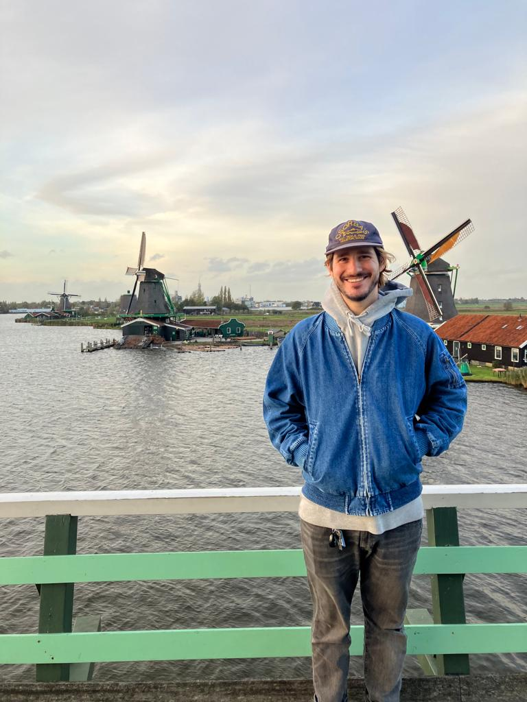
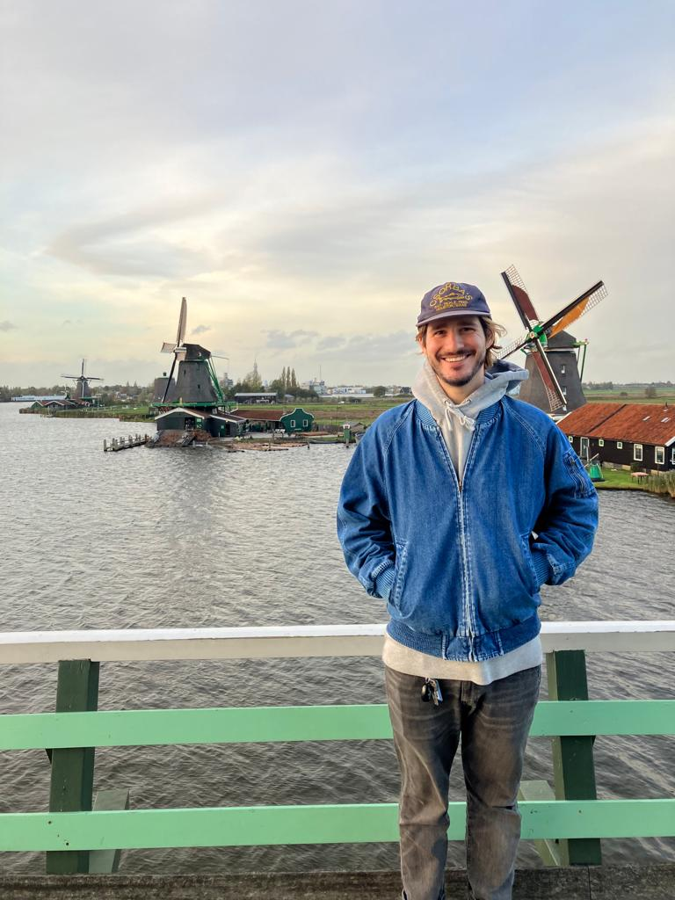

At the bass Ryan
At the drums Cömert

And at the guitar and vocals Jorge

We are a band from the Netherlands who play all John Mayer stuff. Please explore the web to get an idea of what we do and play.
The band is formed by a trio of drummer, bassist and guitarist-singer.
At the bass Ryan
At the drums Cömert
And at the guitar and vocals Jorge
In this section, I describe what are the songs that we consider to be the most relevant and playable from John Mayer's career. For that reason, we have incorporated all of them in our repertory. We play as a trio and use the improvisation element very often.
In this section, we show you the next concerts in Amsterdam and sorrounding areas. The repertoiry is about 2 hours and the tickets can be purchased
Performance in the Scottish capital, Edinburgh
Improvisation at the center of the Brittish capital, London
Some solo performances of John Mayer songs in Netherlands
Some solo performances of John Mayer songs in Netherlands